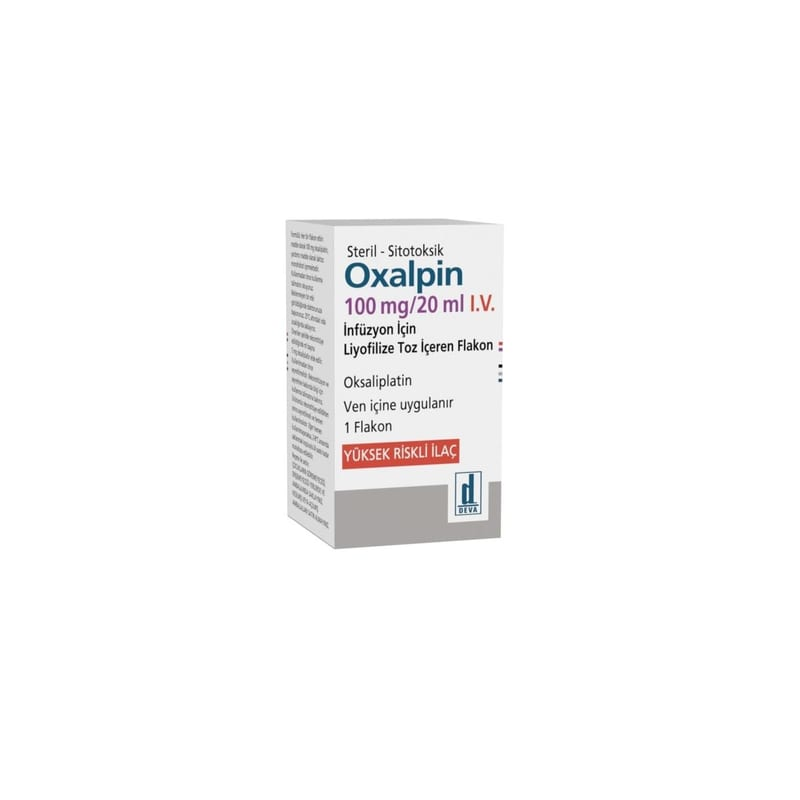

Oxalpin 100 mg/20 ml IV İnfüzyon İçin Liyofilize Toz İçeren Flakon, 1 Adet

Ne için kullanılır
KT · Bölüm 1• OXALPİN beyaz veya beyazımsı renkte toz kütlesidir, sulandırılarak çözelti haline getirilir ve seyreltilerek damar yoluyla uygulanır. • OXALPİN okzaliplatin etkin maddesini içerir. Kutunun içinde 1 adet cam flakon bulunur. Her flakonda toz halinde 100 mg oksaliplatin etkin maddesi bulunmaktadır. • OXALPİN, kanser tedavisinde kullanılan antineoplastik (antikanser) bir ilaçtır ve platin içerir. • Doktorunuz size OXALPİN’i, kalın barsak kanserinde (birincil tümör vücudunuzdan tamamen çıkarıldıktan sonra) veya vücudun diğer kısımlarına dağılmış kalın barsak ve kalın barsa ğın aşağı bölümü (rektum) kanserinin tedavisi için reçetelemiş olabilir. • OXALPİN, 5-fluorourasil ve folinik asit, bevasizumab, kapesitabin adlı başka kanser ilaçlarıyla birlikte uygulanır.